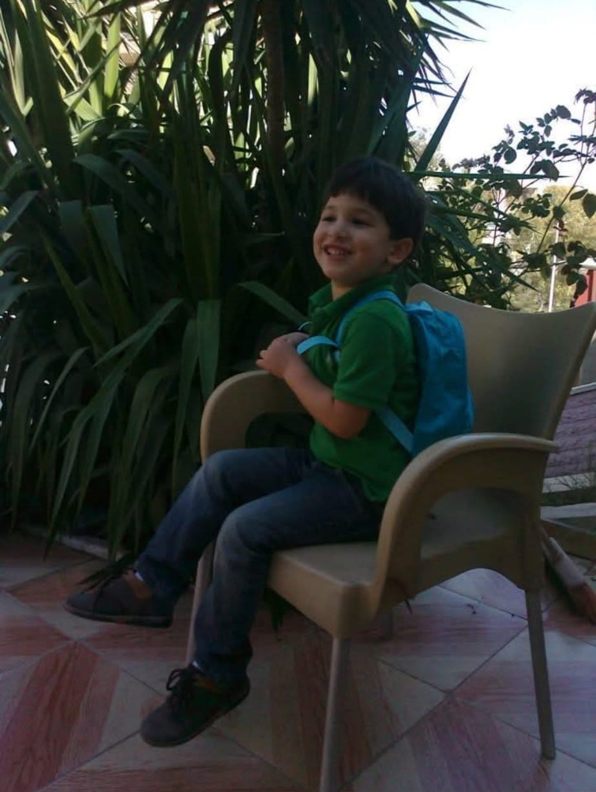
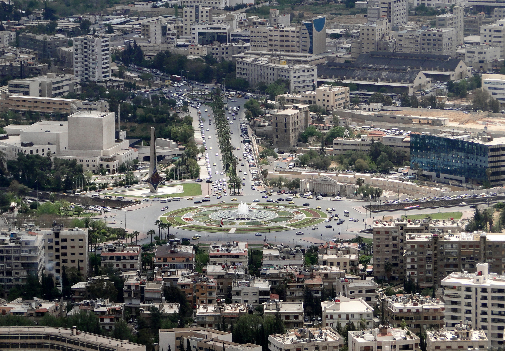

Dit is mijn eerste webpagina die ik heb gemaakt met HTML.
Ik leer dit voor het vak informatica.

Ik ben Zain Al-Balhawan en ik zit in vwo 5. Dit is mijn eerste jaar informatica. Ik vind het leuk om te leren hoe websites werken!

🇸🇾
Ik kom uit Syrië. Ik ben er nog op vakantie geweest.
Ik zit in vwo 5 en volg het vak informatica. In het menu bovenaan vind je mijn pagina's over de kleurmodellen, Binair stelsel, Kleurmodellen, Compressie en als laatst AI
Voor contact kun je mij bereiken via mijn e-mailadres. mohamad.albalhawan@vlietlandcollege.nl
Gemaakt door: Zain Al-Balhawan